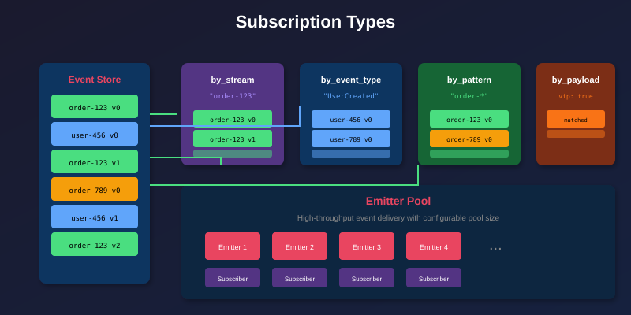
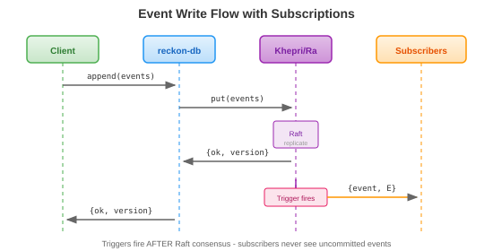

Subscriptions in reckon-db
View SourceSubscriptions enable real-time event delivery to consumers. When events are written to streams, subscribers receive notifications automatically, enabling reactive architectures and event-driven systems.

How Subscriptions Work
reckon-db uses Khepri triggers for guaranteed event delivery:

Key guarantee: Triggers only fire AFTER events are committed via Raft consensus. Subscribers never receive events that don't exist.
Subscription Types
reckon-db supports four subscription types for flexible event filtering:
1. Stream Subscription
Subscribe to all events in a specific stream:
%% Subscribe to a single order's events
{ok, SubKey} = reckon_db_subscriptions:subscribe(
my_store,
stream, %% subscription type
<<"order-123">>, %% stream ID
<<"order_123_handler">> %% subscription name
).Use cases:
- Aggregate projections (one read model per aggregate)
- Saga/process managers following a specific entity
- Real-time UI updates for a specific resource
2. Event Type Subscription
Subscribe to events of a specific type across all streams:
%% Subscribe to all PaymentReceived events
{ok, SubKey} = reckon_db_subscriptions:subscribe(
my_store,
event_type,
<<"PaymentReceived">>,
<<"payment_processor">>
).Use cases:
- Cross-cutting concerns (logging, auditing)
- Metrics collection
- Notification services
3. Event Pattern Subscription
Subscribe to events matching a stream ID pattern with wildcards:
%% Subscribe to all order streams
{ok, SubKey} = reckon_db_subscriptions:subscribe(
my_store,
event_pattern,
<<"order-*">>, %% wildcard pattern
<<"order_projection">>
).
%% Subscribe to all streams in a region
{ok, SubKey2} = reckon_db_subscriptions:subscribe(
my_store,
event_pattern,
<<"*-region-eu">>,
<<"eu_analytics">>
).Use cases:
- Category projections (all orders, all users)
- Regional processing
- Multi-tenant partitioning
4. Payload Subscription
Subscribe to events matching specific payload criteria:
%% Subscribe to high-value orders
{ok, SubKey} = reckon_db_subscriptions:subscribe(
my_store,
event_payload,
#{total => {gt, 10000}}, %% total > 10000
<<"high_value_order_handler">>
).
%% Subscribe to orders from VIP customers
{ok, SubKey2} = reckon_db_subscriptions:subscribe(
my_store,
event_payload,
#{customer_type => <<"VIP">>},
<<"vip_handler">>
).Use cases:
- Conditional processing
- Fraud detection (high amounts)
- Priority handling
Creating Subscriptions
Basic Subscription
%% Create a subscription
{ok, SubscriptionKey} = reckon_db_subscriptions:subscribe(
StoreId,
Type,
Selector,
SubscriptionName
).
%% The subscription key uniquely identifies this subscription
%% Use it for management operationsSubscription Options
%% Advanced options
{ok, SubKey} = reckon_db_subscriptions:subscribe(
my_store,
event_pattern,
<<"order-*">>,
<<"order_projection">>,
#{
pool_size => 4, %% Emitter pool size for parallelism
start_from => 0, %% Start position (0 = beginning)
subscriber => self() %% Direct subscriber PID
}
).Options:
pool_size: Number of emitter workers for parallel delivery (default: 1)start_from: Starting event position for catch-up (default: 0)subscriber: PID to receive events directly
Receiving Events
Using Process Groups
The recommended approach is joining the emitter group:
-module(my_event_handler).
-behaviour(gen_server).
init(StoreId) ->
%% Create subscription
{ok, SubKey} = reckon_db_subscriptions:subscribe(
StoreId,
event_pattern,
<<"order-*">>,
<<"my_handler">>
),
%% Join the emitter group to receive events
reckon_db_emitter_group:join(StoreId, SubKey, self()),
{ok, #{store_id => StoreId, sub_key => SubKey}}.
handle_info({event, Event}, State) ->
%% Process the event
handle_event(Event),
{noreply, State}.
handle_event(#event{event_type = <<"OrderPlaced">>} = Event) ->
logger:info("Order placed: ~p", [Event#event.data]),
update_projection(Event);
handle_event(#event{event_type = <<"OrderShipped">>} = Event) ->
logger:info("Order shipped: ~p", [Event#event.data]),
update_projection(Event);
handle_event(_Event) ->
%% Ignore other events
ok.Multiple Handlers
For high throughput, use multiple handler processes:
-module(order_handler_pool).
start_pool(StoreId, PoolSize) ->
%% Create subscription with pool size
{ok, SubKey} = reckon_db_subscriptions:subscribe(
StoreId,
event_pattern,
<<"order-*">>,
<<"order_handler_pool">>,
#{pool_size => PoolSize}
),
%% Start worker processes
[begin
{ok, Pid} = order_handler_worker:start_link(StoreId, SubKey, N),
Pid
end || N <- lists:seq(1, PoolSize)].
-module(order_handler_worker).
init({StoreId, SubKey, WorkerId}) ->
%% Join the same emitter group
%% Events are distributed round-robin among workers
reckon_db_emitter_group:join(StoreId, SubKey, self()),
{ok, #{worker_id => WorkerId}}.Managing Subscriptions
List Subscriptions
%% List all subscriptions
{ok, Subscriptions} = reckon_db_subscriptions:list(my_store).
%% Each subscription record contains:
%% - type: stream | event_type | event_pattern | event_payload
%% - selector: The filter criteria
%% - subscription_name: Human-readable name
%% - created_at: Timestamp
%% - pool_size: Number of emittersCheck Subscription Exists
%% Check if subscription exists
case reckon_db_subscriptions:exists(my_store, SubscriptionKey) of
true -> io:format("Subscription is active~n");
false -> io:format("Subscription not found~n")
end.Get Subscription Details
%% Get subscription by key
case reckon_db_subscriptions:get(my_store, SubscriptionKey) of
{ok, Subscription} ->
io:format("Type: ~p~n", [Subscription#subscription.type]),
io:format("Selector: ~p~n", [Subscription#subscription.selector]);
{error, not_found} ->
io:format("Subscription not found~n")
end.Unsubscribe
%% Unsubscribe by key
ok = reckon_db_subscriptions:unsubscribe(my_store, SubscriptionKey).
%% Unsubscribe by type and name
ok = reckon_db_subscriptions:unsubscribe(my_store, event_pattern, <<"order_projection">>).Catch-Up Subscriptions
Catch-up subscriptions process historical events before receiving live events:
%% Start from the beginning (catch up on all history)
{ok, SubKey} = reckon_db_subscriptions:subscribe(
my_store,
event_pattern,
<<"order-*">>,
<<"new_projection">>,
#{start_from => 0} %% Start from first event
).
%% Start from a specific position (e.g., after rebuilding)
{ok, SubKey2} = reckon_db_subscriptions:subscribe(
my_store,
event_pattern,
<<"order-*">>,
<<"resumed_projection">>,
#{start_from => 12345} %% Resume from position 12345
).Checkpointing
Track your position to resume after restarts:
-module(checkpointed_handler).
init(StoreId) ->
%% Load last processed position
LastPosition = load_checkpoint(StoreId),
{ok, SubKey} = reckon_db_subscriptions:subscribe(
StoreId,
event_pattern,
<<"order-*">>,
<<"checkpointed_handler">>,
#{start_from => LastPosition}
),
reckon_db_emitter_group:join(StoreId, SubKey, self()),
{ok, #{store_id => StoreId, sub_key => SubKey}}.
handle_info({event, Event}, #{store_id := StoreId} = State) ->
%% Process the event
handle_event(Event),
%% Save checkpoint
save_checkpoint(StoreId, Event#event.version),
{noreply, State}.
%% Checkpoints can be stored in:
%% - The event store itself (as a special stream)
%% - ETS/DETS
%% - External databaseBest Practices
1. Idempotent Event Handling
Events may be delivered more than once. Make handlers idempotent:
handle_event(Event) ->
EventId = Event#event.event_id,
%% Check if already processed
case ets:lookup(processed_events, EventId) of
[{EventId, _}] ->
%% Already processed, skip
ok;
[] ->
%% Process and mark as done
do_process_event(Event),
ets:insert(processed_events, {EventId, erlang:system_time()})
end.2. Handle Ordering Carefully
Within a single stream, events are ordered. Across streams, ordering is not guaranteed:
%% Events from stream "order-123" arrive in order:
%% OrderPlaced -> ItemAdded -> OrderShipped
%% But events from different streams may interleave:
%% order-123:OrderPlaced
%% order-456:OrderPlaced %% Different stream, no ordering guarantee
%% order-123:ItemAdded
%% order-456:PaymentReceived3. Graceful Shutdown
Leave emitter groups on shutdown:
terminate(_Reason, #{store_id := StoreId, sub_key := SubKey}) ->
%% Leave the emitter group
reckon_db_emitter_group:leave(StoreId, SubKey, self()),
ok.4. Monitor Subscription Lag
Track how far behind your subscription is:
%% Check current stream version vs processed version
StreamVersion = reckon_db_streams:get_version(StoreId, StreamId),
ProcessedVersion = get_last_processed_version(),
Lag = StreamVersion - ProcessedVersion,
case Lag > 1000 of
true ->
logger:warning("Subscription lag is high: ~p events behind", [Lag]);
false ->
ok
end.Further Reading
- Event Sourcing Guide - Foundation concepts
- CQRS Guide - Using subscriptions for projections
- Snapshots Guide - Optimizing catch-up subscriptions
References
- Event Store: Persistent Subscriptions
- Axon Framework: Event Processors